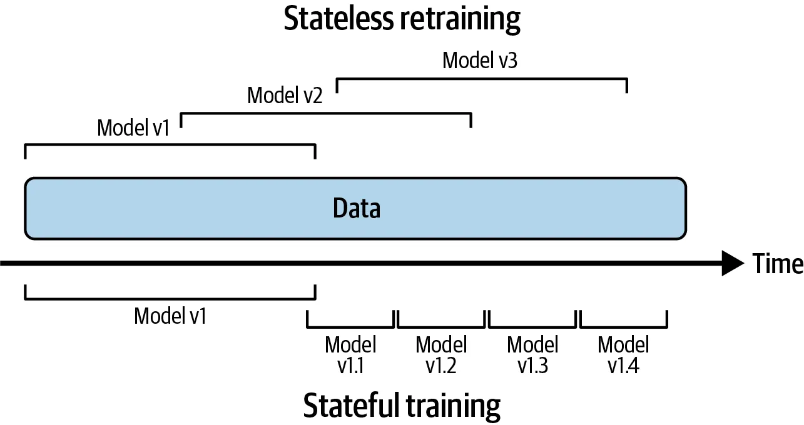

7.1 Systems, Infrastructure
3316512 Pharmaceutical AI
Natapol Pornputtapong, PhD
Chulalongkorn University
19 Mar 2026
Part 1: Continual Learning & Production Testing1
The Need for Continual Learning
- Data Drift: The distribution of input features (P(X)) changes over time.
- Concept Drift: The relationship between features and labels (P(Y|X)) changes (e.g., consumer behavior changes).
- Prediction Drift: The model’s output distribution shifts from what was seen during training.
Continual Learning: Technical Approaches

Model Iteration vs. Data Iteration
The shift towards Data-Centric AI.
Model-Centric
- Goal: Improve the architecture (e.g., adding layers, changing activation).
- Assumption: The data is a fixed “benchmark.”
- Focus: Tuning hyperparameters and loss functions.
Data-Centric
- Goal: Improve the quality of the data (e.g., cleaner labels, more edge cases).
- Assumption: The model is “good enough.”
- Focus: Feature engineering, error analysis on specific data slices.
Retraining Schemes: When to Retrain?
- Fixed Interval: Retrain every week/month (simple, but may miss sudden drift).
- Performance Trigger: Retrain when accuracy/F1 drops below a threshold.
- Data Drift Trigger: Retrain when the input distribution shifts significantly (e.g., using Kolmogorov-Smirnov test).
- On-demand: Retrain when new clinical guidelines or drugs are released.
Testing in Production
- Shadow Deployment: New model (M_2) receives live traffic but its output is ignored.
- Canary Releases: Roll out to small percentage of users (e.g., one specific pharmacy branch).
- A/B Testing: Randomized controlled trial of models.
- Multi-armed Bandits: evaluate and randomly route traffic to the “winning” model.
Part 2: Infrastructure & Tooling for MLOps 1
The Feature Store: The “Single Source of Truth”
Solving the Training-Serving Skew.
- Offline Store: Large-scale historical data for batch training (e.g., 10 years of patient records).
- Online Store: Low-latency storage for real-time inference (e.g., current prescription details).
- Point-in-Time Joins: Ensures that training data only uses features that would have been available at the time of the event.
- Crucial for Pharma: Prevents “data leakage” from future clinical outcomes.
Model Registry & Orchestration
Managing the model lifecycle.
- Model Registry:
- Version Control for weights.
- Lineage: “Which dataset produced this specific model version?”
- Metadata: Environment variables, dependencies, and validation signatures.
- Orchestration (Airflow/Kubeflow):
- Automating the DAG (Directed Acyclic Graph) from data ingestion to deployment.
- Essential for Validation Trails in GxP environments.
The MLOps Loop: Essential Tools
| Stage | Key Tools |
|---|---|
| Data Management | Snowflake, Databricks, Feast (Feature Store) |
| Development | Jupyter, VS Code, Weights & Biases (Experiment Tracking) |
| Orchestration | Apache Airflow, Kubeflow, Argo Workflows |
| Model Registry | MLflow, DVC (Data & Model Versioning) |
| Deployment | Docker, Kubernetes, BentoML, Seldon |
| Monitoring | Prometheus, Grafana, Evidently AI, WhyLabs |
Monitoring: Beyond “System Health”
In ML, your code might be up, but your model might be “down.”
- Operational Metrics: Latency, Throughput, CPU/Memory (Standard IT).
- ML Metrics: Precision, Recall, F1-Score, AUC.
- Data Quality Metrics: Min/Max ranges, null values, and schema changes.
- Adversarial Monitoring: Detecting if someone is trying to “trick” the pharmacy bot into prescribing restricted drugs.
The Monitoring Dashboard
- System Health: Are the servers running? (CPU, RAM, Latency)
- Data Integrity: Are there nulls? Did the schema change?
- Model Performance: Is accuracy dropping? (Precision, Recall)
- Distribution Monitoring: Compare current input histograms vs. training histograms.
- User Feedback: How often does the pharmacist “override” the AI?
Part 3: The Human Side of ML1
User Experience for Probabilistic Systems
- The Consistency Problem: Traditional software is deterministic (1+1=2). ML is probabilistic (P(Success)=0.98).
- Explainability (XAI): A pharmacist cannot accept a recommendation they don’t understand.
- SHAP/LIME: Highlighting which patient features (age, weight, lab values) drove the AI’s prediction.
- Smooth Failing: Instead of a generic error, provide a “Low Confidence” flag and a “Route to Senior Pharmacist” button.
Responsible AI & Ethics
- Fairness: Is the model less accurate for certain ethnic groups due to biased training data?
- Privacy: Differential Privacy and Federated Learning—training on patient data without moving it out of the hospital firewall.
- Accountability: If an AI makes a dosing error, who is responsible?
- FIP Stance: The human pharmacist remains the ultimate accountable party.
PIC/S GMP Annex 22: The “AI Bible”
Released July 2025: Regulatory boundaries for AI in manufacturing.
1. The Static/Dynamic Divide
- Static Models: Parameters are locked. Validated once. Permitted for high-risk.
- Dynamic Models: Learn in real-time. Prohibited for high-risk (e.g., sterile fill-finish checks).
- The “Lock-and-Update” compromise: Frequent, automated re-validation cycles for static models are the preferred path forward.
Autonomy vs. Adaptability
The core dilemma in AI validation.
- Autonomy:
- The system’s ability to act or make decisions without direct human oversight.
- The Risk: “Unintended actions” if the AI encounters an edge case it wasn’t trained for.
- Adaptability:
- The system’s ability to learn and change its behavior over time (Dynamic learning).
- The Risk: “Model Drift” or “Catastrophic Forgetting.”
Regulatory View (Annex 22)
Systems with high adaptability are generally prohibited for high-risk manufacturing because their “Validated State” is constantly shifting.
Annex 22: Detailed Requirements
- Data Integrity: “Test Data” must be independent and inaccessible during training.
- Multidisciplinary Teams: A “Responsible Person” must ensure collaboration between:
- Data Scientists (Algorithm)
- SMEs (Clinical Context)
- QA (Compliance)
- IT (Infrastructure)
- Explainability: Models must provide “Human-Understandable Logic” for critical decisions.
GAMP 5 Second Edition & AI
From V-Model to Agile Validation.
- Critical Thinking (M12): Encourages “Software Assurance” over “Software Testing.” Don’t test the tool; verify the intended use.
- ALCOA+ for AI:
- Attributable: Who trained the model?
- Legible: Can we read the training logs?
- Contemporaneous: Are drift detections logged in real-time?
- Original: Raw data vs. pre-processed data lineage.
- Iterative Validation: Recognition that AI systems require continuous lifecycle management, not just a one-time IQ/OQ/PQ.
FIP AI Toolkit for Pharmacy (2025)
Guidelines for the Global Pharmacy Workforce.
- Clinical Decision Support (CDS): AI should assist, not automate, the “final check.”
- AI Literacy: FIP Goal 20 requires pharmacies to implement training on:
- Interpreting AI confidence scores.
- Identifying algorithmic bias.
- Communicating AI-driven decisions to patients.
- Equity: Ensuring AI tools are available in low-resource settings, not just high-income countries.
Summary: The Global Compliance Matrix
| Topic | Annex 22 (Mfg) | GAMP 5 (Validation) | FIP (Clinical) |
|---|---|---|---|
| Model Type | Static Only | Risk-dependent | Decision Support |
| Human Role | SME Oversight | Critical Thinking | Final Authority |
| Data Focus | Integrity/Separation | Governance (ALCOA+) | Privacy/Equity |
| Validation | Prospective | Life-cycle based | Continuous CPD |
Conclusion: The Future of Pharmacy AI
Safe, Scalable, and Human-Centric.
- Integrate MLOps with GxP: Automate compliance logs within your orchestration pipelines.
- Prioritize Explainability: If you can’t explain it, you shouldn’t deploy it in pharmacy.
- Continuous Education: The technology is moving faster than the law; ethical frameworks are your compass.